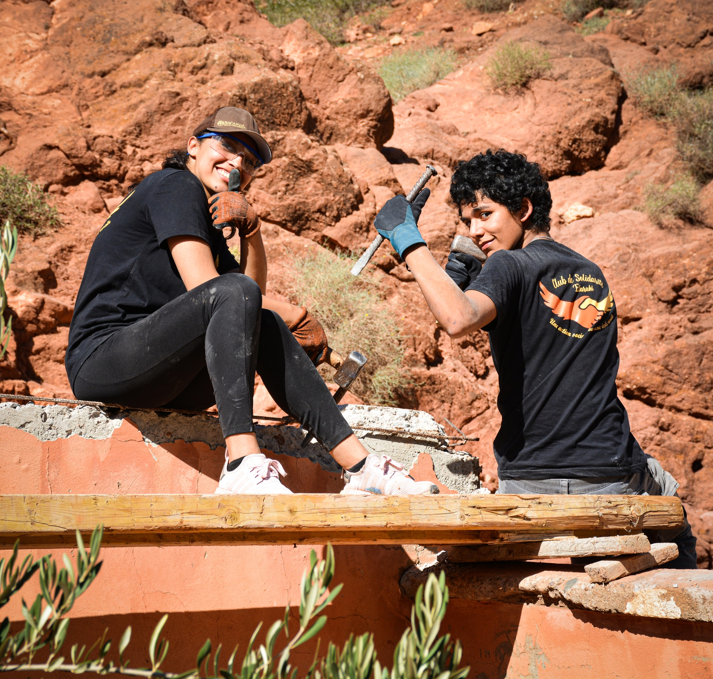

Solidarité
Elaraki
« Être SOLIDAIRE et au service du
Développement Durable de la société »
Ensemble, construisons un avenir plus solidaire, plus juste et plus durable.
Agir aujourd'hui pour
un avenir meilleur
Le Club de Solidarité Elaraki s'engage à promouvoir la solidarité, l'entraide et le développement durable au sein de notre communauté scolaire, à travers des actions concrètes et un impact positif sur la société.
Découvrir notre mission →impact durable
Des actions concrètes pour un changement réel
Solidarité sociale
Soutien aux familles, collectes solidaires et aide aux plus démunis.
→Environnement
Actions de terrain, sensibilisation et initiatives pour un avenir durable.
→Éducation
Amélioration des espaces d’apprentissage et soutien aux écoles rurales.
→Engagement citoyen
Actions communautaires, partage, culture et esprit d’entraide.
→Des projets qui font la différence

Nos événements & actions
Des moments de partage et d’engagement documentés dans les archives du club.
Aucun événement ne correspond à votre recherche.
Chaque geste compte.
Rejoignez le mouvement.
Votre temps, vos idées et votre engagement peuvent contribuer à faire une réelle différence.
Rejoindre le Club de Solidarité →Rejoignez l’aventure !
Devenez bénévole et contribuez à des actions concrètes pour un avenir meilleur.
- Aide à l’organisation des événements
- Participation aux collectes solidaires
- Projets éducatifs et initiatives citoyennes
- Communication et création de contenu
Un projet, une question ?
Écrivez au Club de Solidarité. Votre message sera traité par le bureau après configuration du service de réception.
L’objectif des activités du Club de Solidarité va bien au-delà des actions menées : inculquer les bonnes valeurs et répandre l’esprit de solidarité et d’entraide. Plusieurs projets se font au cours de l’année pour soutenir les populations et les institutions défavorisées.
« Le propre de la solidarité, c'est de ne point admettre d'exclusion. » — Victor Hugo